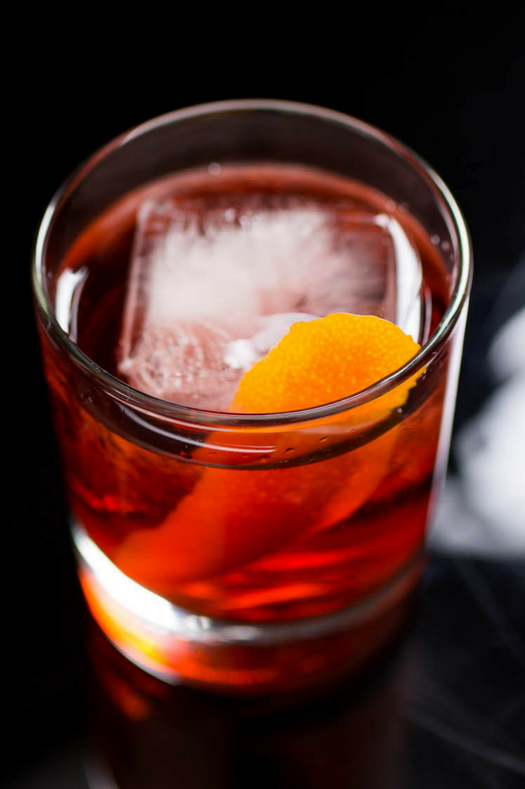

This is one of the world's most popular cocktails and it's origin is
shrouded in mystery.
It is a simple recipe of only three ingredients and usually enjoyed both before
and after a meal.
- 25ml Gin
- 25ml Campari
- 25ml Sweet Vermouth
- Add ingredients to a mixing glass
- Fill mixing glass with ice
- Stir until properly chilled and diluted
- Add large ice cube to tumbler
- Strain cocktail into tumbler over large cube
- Cut wide strip of peel from an orange
- Zest peel over drink to express oils
- Garnish drink with orange zest